Experimental
QGIS plugin · Version 0.8.0
Road Furniture Designer
User Guide and Technical Manual
What Road Furniture Designer is for, what this edition can and cannot do yet, and how to get from a Civil 3D LandXML to a signed and marked road.
tools/guide/make_guide_road.py: a 4.4 km two-lane road with a sharp curve, a series of bends, short crests, a steep descent onto a high embankment and a 50 km/h village, written as a Civil 3D style LandXML. Treat the tool's proposals as a first draft for an engineer to review, not as a design.What has been checked:
Placing traffic signs, markings and barriers in Civil 3D and then counting them for the schedules is slow, manual work. Road Furniture Designer moves both jobs into QGIS, next to the road alignment:
Signs are points and linear items are runs in one GeoPackage. Their chainage, offset, side, facing, size, grade and clearance from the road edge are worked out from the alignment and recomputed whenever they move.
Scope:
road_furniture_designer-<version>.zip, from the Assets of a release on the repository's Releases page (or, for the latest main, from Actions → plugin zip → Artifacts, unzipping the outer layer GitHub adds). Do not use the repository's green Code → Download ZIP: that is the source, which QGIS cannot install.ext_libs folder, so the plugin works where pip is blocked.To try it without project data, run python tools/guide/make_guide_road.py guide_road.xml and open the file it writes.
Creating a project, placing and editing signs, writing legends, the checks that run as you work, the auto-placement engine and speed limit zones.
New project… asks for the LandXML, the alignment (a file can hold several), and a GeoPackage to save. The GeoPackage is the master record: it holds the signs, the linear runs and a copy of everything derived from the LandXML that the map needs.
| Layer | Contents |
|---|---|
| RFD signs | One point per sign face, drawn with its RDM artwork (faces on one post are stacked). |
| RFD linear furniture | Markings, road studs, barriers, humps, bar sets and crossings as runs along the road. |
| RFD alignment, RFD chainage | The alignment, with ticks and labels every 100 m. |
| RFD road edges | Corridor edges from the LandXML cross-sections, coloured by code (ETW, EPS, Hinge, Ditch_In, Ditch_Out, Daylight). |
| RFD vertical curves | Crest and sag PVIs with length, K and A. |
The layers take the LandXML's coordinate system when the file declares one. If the QGIS project uses a different CRS the plugin says so; keeping both the same avoids confusion when exchanging with Civil 3D.
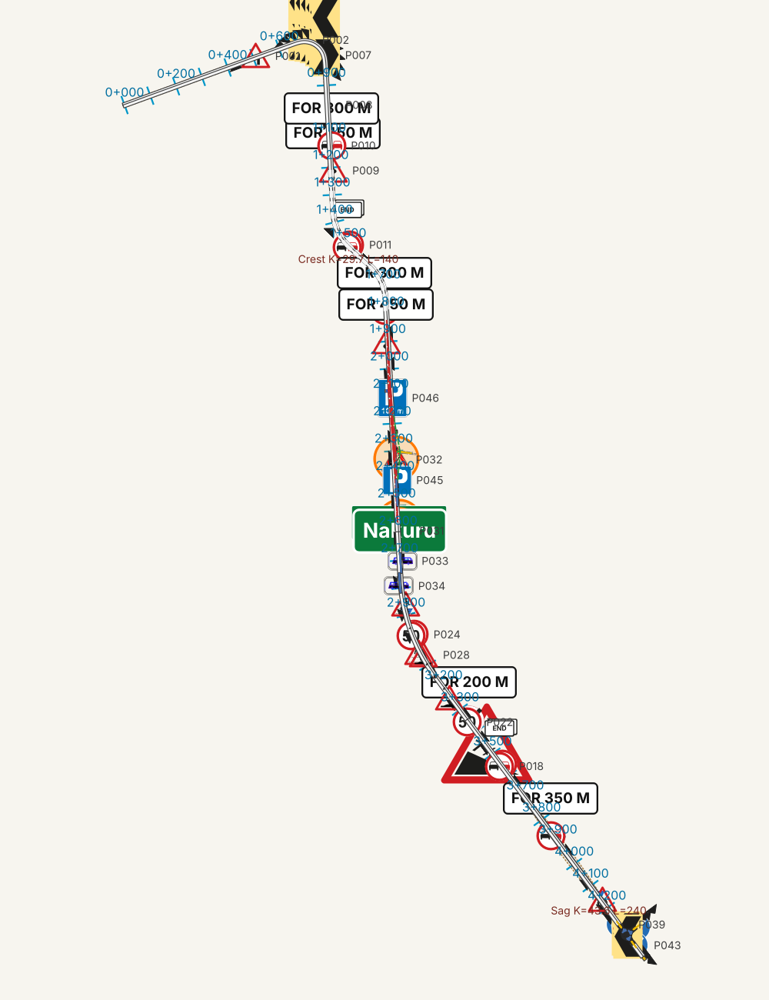
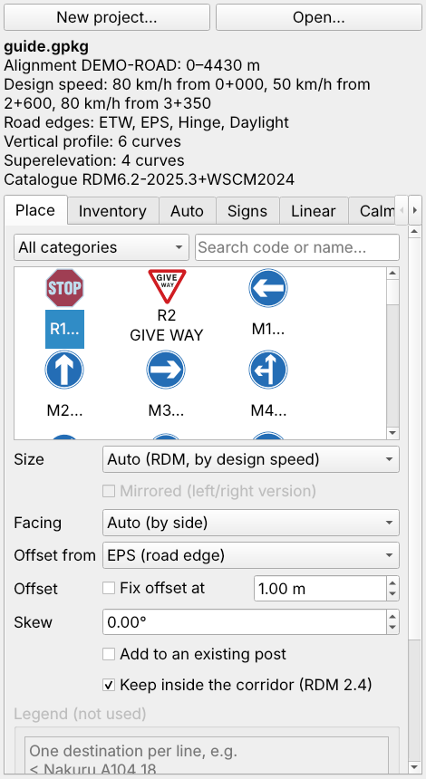
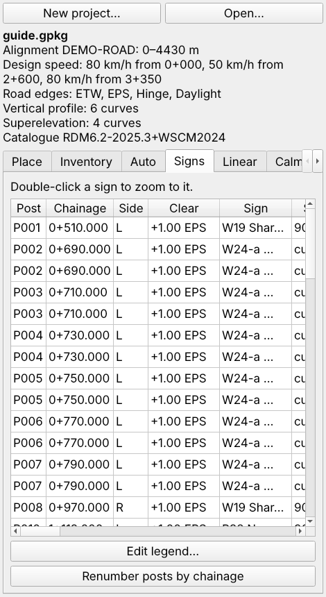
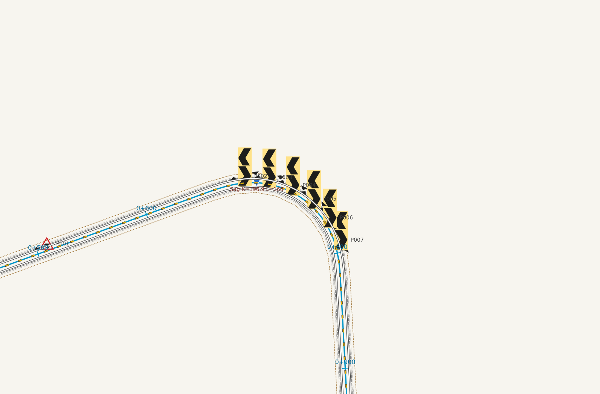
Directional signs, town and county signs and text plates carry text that changes from job to job. Type the legend before placing, or select the sign on the Signs tab and use Edit legend…. One destination per line:
^ Nakuru 6 ahead, 6 km < Molo B4 32 left, route B4, 32 km > Eldoret A104 120 right
^ or A ahead, < or L left, > or R right. A line with no arrow is plain text (plates).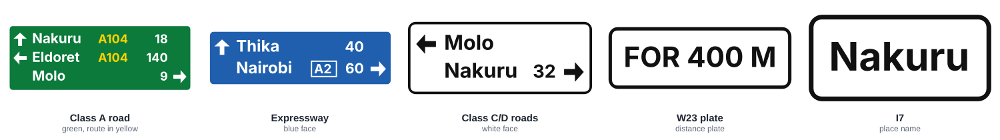
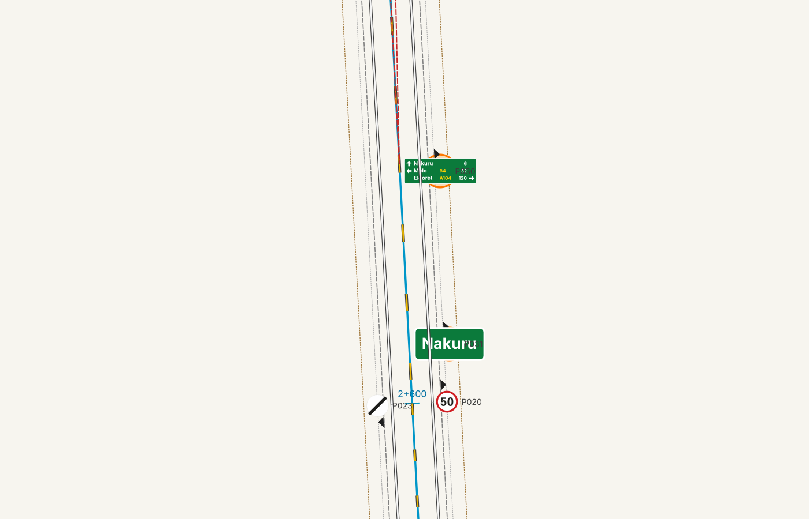
facing in the attribute table switches Auto facing off for that sign; typing a size switches Auto size off.The Inventory tab lists checks for the whole sign list. Errors block the Civil 3D export; warnings do not. The report adds the furniture checks of section 19.
| Check | Level | Rule |
|---|---|---|
| Inside the travelled way | Error | Post closer to the centreline than the edge of travelled way (ETW). |
| On the shoulder | Warning | Post between ETW and the edge of paved shoulder (EPS). |
| Outside the RDM lateral band | Warning | RDM 6.2 §2.4: 0.6 to 3.0 m beyond the carriageway or paved-shoulder edge. |
| Outside the corridor | Warning | Beyond the ditch or daylight line, where the verge is modelled. |
| Spacing | Warning | RDM 6.2 §2.4: consecutive signs at least 0.6 V metres apart (48 m at 80 km/h). |
| Legend missing | Warning | Directional signs and plates need their text. |
| Post consistency | Error | Faces on one post at different positions, or with different post or foundation types. |
| Unknown code, size, post or foundation | Error | Not in the catalogue. |
The engine reads the alignment's geometry and proposes the warning and regulatory signs RDM 6.2 calls for. Proposals are suggestions: an engineer accepts or removes each one.
| Situation | Signs proposed | Basis |
|---|---|---|
| Curve whose safe speed is 10 km/h or more below the approach speed | W20 bend (W19 sharp turn when 30 km/h or more below), both directions, at the advance distance | RDM 6.2 §4.5; V² = 127 R (e + f) |
| Warned curves closer than 150 m | W22 series of bends (W21 sharp) with a W23 distance plate | RDM 6.2 §4.5 |
| Curve 20 km/h or more below the approach speed | W24-a chevrons on the outside of the curve, back to back, at Table 4.2 spacing | RDM 6.2 §4.6.1, Table 4.2 |
| Descent steeper than 5 %; ascent steeper than 10 % | W30 / W31 with the actual grade | RDM 6.2 §4.6.4 |
| Sight distance below the passing sight distance | P32 with a W23 distance plate at the start; P32 with the supplementary END plate at the end; in each direction | RDM 6.2 §3.11; RDM 1.3 Table 3.20 |
| Sag with headlight sight distance short of SSD; crest short of SSD | Reported as findings (no sign proposed) | RDM 1.3 Tables 6.1, 6.4 |
Signs go at the advance distance (6 seconds of travel at the design speed, RDM 6.2 §2.4), on the left for up-chainage traffic and on the right for down-chainage traffic, at the set clearance beyond the reference edge, and are moved back where they would be closer than 0.6 V metres. Running it again never duplicates a sign, a chevron or a plate already there.
On the demonstration road (80 km/h, 50 km/h through the village) the engine reports 10 findings and proposes 35 faces in under half a second: the R 75 m curve (safe speed 47 km/h, a W19 sharp turn with chevrons), two R 180 m bends 70 m apart (a W22 series with its plate), a 6.8 % descent, and two no-overtaking zones in each direction over the short crests.
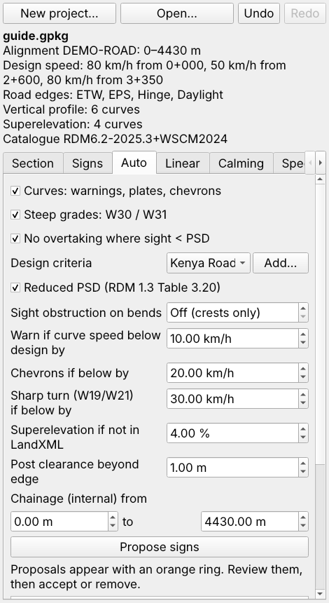
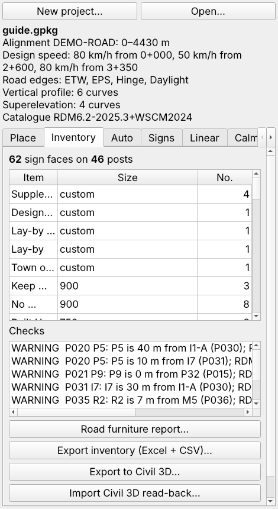
proposed, drawn with an orange ring, and listed with the reason for each (for example R=75 m, e=6.0 %: curve speed 47 km/h vs 80 km/h design).| Parameter | Default | Meaning |
|---|---|---|
| Warn if curve speed below design by | 10 km/h | Margin that triggers a bend warning. |
| Chevrons if below by | 20 km/h | Margin that adds chevrons. |
| Sharp turn if below by | 30 km/h | W19/W21 instead of W20/W22. |
| Series gap | 150 m | Warned curves closer than this are signed as a series. |
| Superelevation if not in LandXML | 4 % | Used when the file has no superelevation for a curve. |
| Steep descent / ascent | 5 % / 10 % | RDM 6.2 §4.6.4 thresholds; grades shorter than 50 m are ignored. |
| Criteria | Kenya RDM 2025 | Side friction, sight distances and K values; AASHTO 2011 and user criteria files can be chosen (section 25). |
| Post clearance beyond edge | 1.0 m | Within RDM's 0.6–3.0 m band. |
| Offset without corridor edges | 5.5 m | From the centreline when the LandXML has no cross-sections. |
The posted limit is the designer's decision; RFD signs it to RDM 6.2 §3.5. On the Speed limits tab, pick the limit (P5 50, P6 70, P7 80 or P8 120 km/h; 100 km/h is the general limit and has no sign), type the zone's chainages and press Add zone. For each direction RFD proposes:
It flags a limit above the design speed, a very short zone, and a zone running off the end of the alignment. Propose from design speed adds 50 km/h built-up area zones where the LandXML design speed is 50 km/h; a rural 70 or 80 km/h design speed does not by itself call for a special limit. On the demonstration road it proposes the 750 m village zone with six signs.
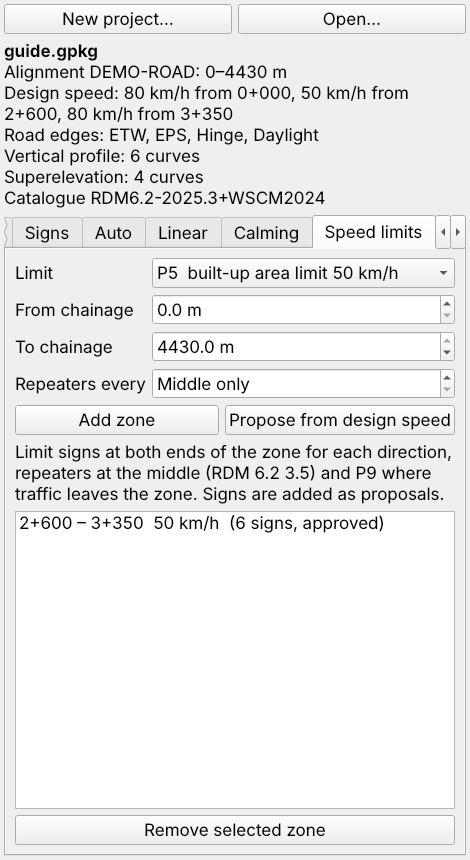
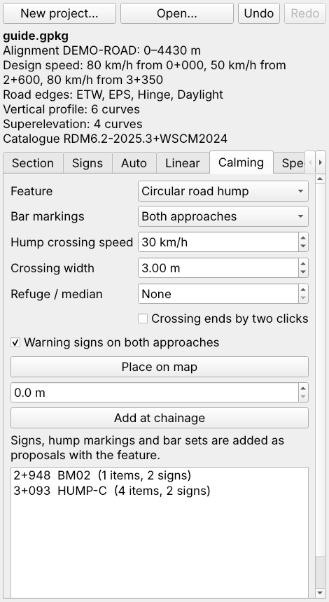
Linear furniture as runs along the road: proposed from RDM 6.1 and RDM 1.3, or drawn by hand.
Markings, road studs, barriers and transverse items are stored as runs in the rsd_lines layer. A run has an item code, a start and end chainage, a side, and an offset measured either from a corridor edge (for example ETW) or from the centreline; a run tied to an edge follows it where the road widens. Geometry, length and quantity are rebuilt whenever one of those fields changes, so runs can be edited in the attribute table.
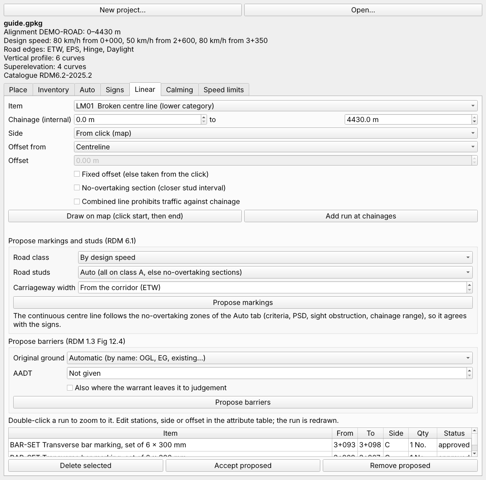
On the Linear tab, pick the item and press Draw on map: click the start, then the end. The side and offset come from the first click; tick Fixed offset to use a typed offset instead (for example 7.3 m right for the median edge of a dual carriageway), or force Centre, Left or Right. Add run at chainages does the same from typed chainages. This covers dual carriageways, slip roads and anything the rules do not propose.
The catalogue (rfd/data/furniture_linear.json) is open: add or replace items with a JSON file in a folder listed in RFD_FURNITURE_PATH.
Propose markings adds the centre line, edge lines and studs (RDM 6.1) for review, like signs.
Quantities: markings in metres of run and m² painted (from the mark, gap and width of RDM 6.1 Tables 4.1–4.3), studs by number. On the demonstration road the proposal is 26 runs.
Propose barriers works from the corridor sections (RDM 1.3 Chapter 12):
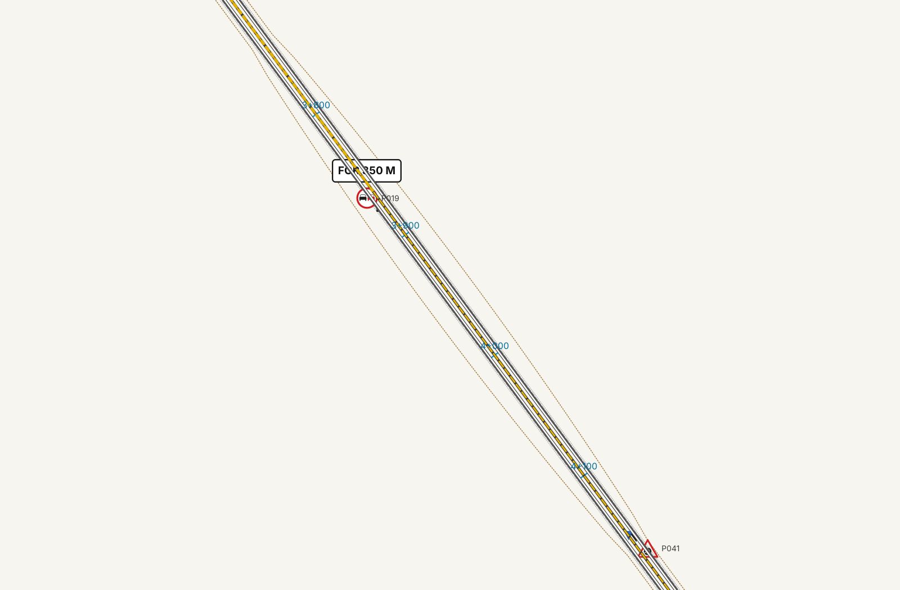
Where a hump or a crossing goes is the designer's decision; RFD details it to the manuals. On the Calming tab pick a feature, then click Place on map and click the chainage, or type it and press Add at chainage. Each feature creates, as proposals:
Everything a feature creates is listed and removed together. RDM 6.2 has no pedestrian-crossing information sign; crossings are signed with W55 and the zebra.
Crossing extent and refuges. A crossing runs across the carriageway between the two ETW edges of the corridor. Where that is not what you want (part of the road, one carriageway of a dual carriageway, a road exported without corridor edges) tick Crossing ends by two clicks and click one kerb, then the other: the crossing runs exactly between them. A Refuge / median width splits the crossing into two zebras with a kerbed refuge island between them (item REFUGE, counted by number); the refuge sits on the centreline when the crossing spans it, otherwise in the middle of the crossing. Each leg is checked against the 10.5 m limit, a refuge narrower than 1.2 m is flagged, and so is a refuge on a crossing of 10.5 m or less, which needs none: on a single two-lane carriageway it only narrows the lanes. Refuges are for wide crossings and medians, such as a dual carriageway crossed kerb to kerb in two legs.
Humps, bar sets and crossings are drawn as they are painted on the map, the plan sheets and the DXF: zebra bars, BM04 triangles on the hump ramps, bar sets across the lane and the hump footprint filled. Transverse items such as a single bar set or a zebra can also go in with one click from the Linear tab.
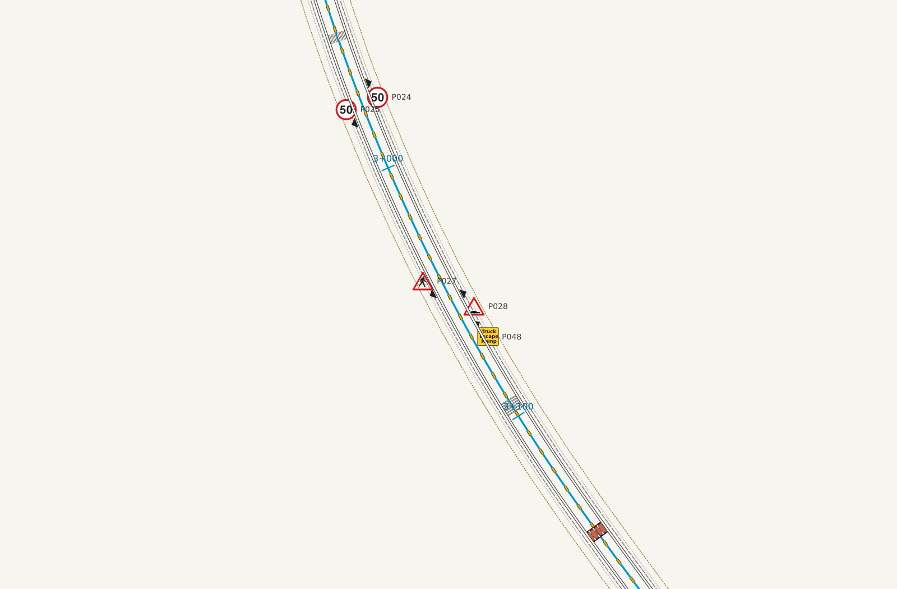
RFD does not design junctions: the layout, kerb lines, control radii and entry widths come from the junction design. What it gives you are the islands and markings of the standard geometry drawings RDM/1/3/2/01 (type A) and RDM/1/3/2/02 (types B and C) as templates to place and fit, either as a whole kit for a junction type or one piece at a time.
| Type | Kit |
|---|---|
| A-1 | Ghost island tail on the main road (yellow hatching HM07 in an HM14 border); raised splitter island 7.5 × 3.0 m (R 1.5) with a hatched tail; raised corner island on the left-turn corner with a white hatched lead-in. |
| A-2 | Raised teardrop splitter, about 25 m, hatched at the tail; corner islands on both corners. |
| B | Teardrop splitter (R 0.75); corner island on the left-turn corner. |
| B-Mod | Hatched strip ahead of the right-turn lane, hatched wedge beyond the junction, teardrop splitter. |
| C | Teardrop splitter, 10 + 10 m. |
Every kit also carries the GIVE WAY line across the minor road's approach lane (TM07), the triangular GIVE WAY marking 2.5 m behind it (BM07) and 30 m of continuous centre line on the minor road (LM24), to RDM 6.1 §5.3. The sheet titled "types B, C & D" labels no panel D (its two right-hand panels both read "Type B – Modified"), so there is no type D template.
The second click sets the minor road's direction, so the pieces take the skew: corner islands shear with it, and pieces on the main road follow its curvature. Kenya drives on the left, so the approach lane, the left-turn corner and the ghost island tail land on the right sides whichever side of the main road the minor road leaves from. Scale enlarges or shrinks the pieces about the junction point, before placing or, with Apply scale to selected, afterwards. The shapes follow the dimensions written on the sheets; the sheets are not drawn to scale, so treat the pieces as a starting point and fit them to your kerb lines.
Guide lines (on by default) are construction lines for sketching and fitting: the main-road edge, the minor road's centreline and edges, the kerb returns (single-radius fillets: 30 m for type A, 25 m for B, 15 m otherwise; RDM 1.3 Figure 9.25 uses three-centred curves R1 : R2 : R3 = 2 : 1 : 3) and the Rc turning arcs, tangent to the main-road centreline through the splitter nose (Rc 15 m, as recommended on RDM/1/3/2/01). They carry no quantities and sit on their own layer category and DXF layer, so you can switch them off.
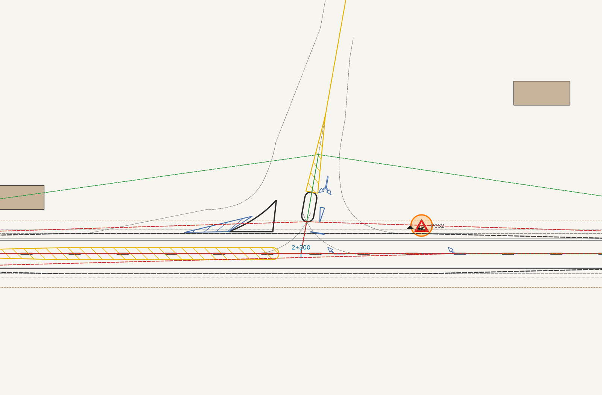
The pieces are kept in the layer rsd_junctions, one feature per piece and marking code, with the rule junction:<id>. Editing sta, bearing_deg, scale or edge_m in the attribute table rebuilds the piece from its template. The list on the tab shows each junction's chainage, type, side, crossing angle and quantities; double-click to zoom, or remove a junction with all its pieces. The templates are open data in rfd/data/junction_templates.json.
Often the road being designed is the minor road: it ends at, or crosses, an existing or another design road. Set Junction to Our road joins another road and choose the Main road: another alignment in the same LandXML, or Click its direction where the main road is not in the export.
The pieces are built in the main road's frame, as above, so the main-road pieces follow the other alignment and the minor-road pieces sit on our approach: the GIVE WAY line, the triangle and the LM24 line. An R2 Give Way sign is proposed on the left of our approaching traffic, just behind the give way line. It carries the junction's rule, so it stays when auto-placement is re-run and goes when the junction is removed. The list shows these junctions as "joins <alignment>" or "joins main road".
Every junction kit carries its visibility splays (RDM 1.3 §9.5.4), on by default: the sight triangles in which nothing may block the view between a driver waiting on the minor road and traffic on the main road, on both sides of the junction.
| Splay | Apex on the minor road | Along the main road |
|---|---|---|
| Approach / give way (Figure 9.11) | 20 m back from the main road's lane edge | LA, Table 9.7: 95 m at 50 km/h, 140 m at 70, 190 m at 85, 215 m at 100 |
| Stop (Figure 9.12) | 3.0 m back from the lane edge | LS, Table 9.8: 160 m at 50 km/h, 225 m at 70, 275 m at 85, 320 m at 100 |
The apex sits on the minor road's centreline, measured along the minor road, so a skewed junction keeps the driver's real position; the far ends sit on the main road's centreline and follow its curvature. Speeds between the table values are interpolated. The main road's design speed comes from its alignment (our road, or the other alignment where our road is the minor road); type it as Main road speed where the alignment has none or the main road is a clicked direction, otherwise 80 km/h is assumed and flagged. The tables are in the design criteria file (junction_sight), so another standard can replace them. RDM 1.3 asks for the approach splays and, where they cannot be achieved, at least the stop splays.
RFD checks the splays two ways:
The splays are drawn green (approach) and red (stop), dashed, and go to the DXF on RSD-JN-SPLAY-A and RSD-JN-SPLAY-S. Untick Visibility splays to place a kit without them. Minor-road approach visibility on a bend (RDM 1.3 Figure 9.13) is not drawn yet.
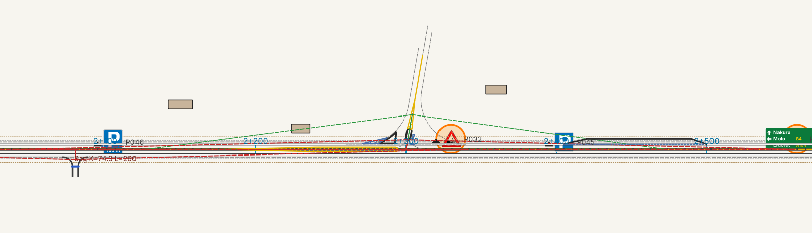
Choose the type Private access (RDM 1.3 §9.11.16, Figure 9.33), set its width (at least 3 m), return radius (6 m or more for the turning traffic) and the distance to the boundary (at least 10 m from the road edge to the fence or boundary line), then click the access point on our road and a point up the access, so it takes the skew. RFD draws:
The schedule lists the access with its pavement area and edge length, and the pipe. The furniture checks flag an access narrower than 3 m (issue), a radius under 6 m, a run under 10 m, and any private access on a class A, B, UA or UC road, where RDM 1.3 Tables 2.3 and 2.4 ask for full access control (no direct private accesses) as the desirable standard: group accesses or use a service road where you can. The class is taken from Road class in Propose markings on the Linear tab.
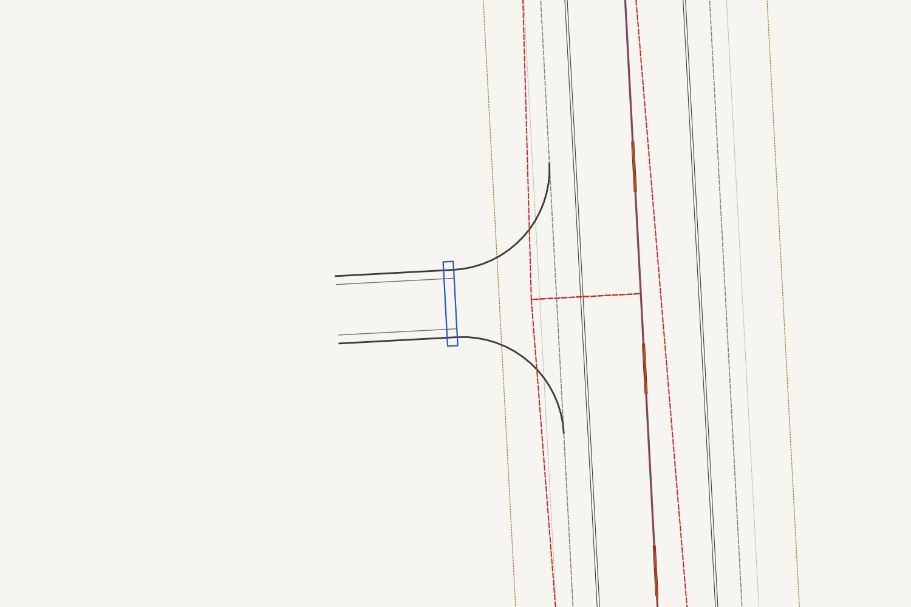
Choose the type Roundabout (RDM 1.3 Chapter 10; markings RDM 6.1 Figures 7.14 to 7.16) and set the central island diameter, the inscribed circle diameter (ICD; by default the Table 10.1 minimum for that island and the 15.5 m articulated design vehicle) and the entry and exit radii of the kerb returns. Then:
When a roundabout is placed, and whenever markings are proposed again, our road's longitudinal markings and studs are cut back: centre lines to beyond each splitter's lead-in and its LM24, edge lines and studs to the end of the entry flare. Runs that cross the roundabout are split in two.
RFD draws the central island (and a mountable apron edge where one is set), the outer kerb of the circulatory carriageway with the entry and exit returns, flared to the approach width, and on each arm a kerbed splitter island with a hatched lead-in, the TM07 give way line across the entry with the BM07 triangle 2.5 m behind it, the TM04 line across the exit and the LM24 centre line on the approach. Kenya drives on the left, so traffic enters on the left of each arm and circulates clockwise. It proposes an R2 Give Way at every entry, an M5 Keep Left on every splitter nose and a W24 chevron on the central island facing every entry, and W17 Roundabout Ahead on our road's approaches at the advance distance for their speed.
The furniture checks (RDM 1.3 Chapter 10): three to five arms, at least 60° apart (10.4.3); a central island of at least 4 m (10.5.2.1); an ICD of at least the Table 10.1 minimum and not over 100 m (10.5); a circulatory carriageway of about 6.5 m or more and not over 15 m (10.5.2); kerb returns of adjacent arms that run into each other; an ICD between 28 and 36 m, where a compact roundabout should be considered; and on our approaches, the entry seen from the stopping sight distance over the profile, so that it does not sit on a sharp crest (10.4.4). Entry deflection and the fastest path (no path radius over 100 m) are not checked: design them with the junction. The manual's other rule of thumb, a circulatory width of 1.0 to 1.2 times the entry width, is not checked either, as Table 10.1 widths for the design vehicle exceed it on single-lane roundabouts; the width is listed for your judgement. Mini roundabouts (no kerbed island) are not drawn.
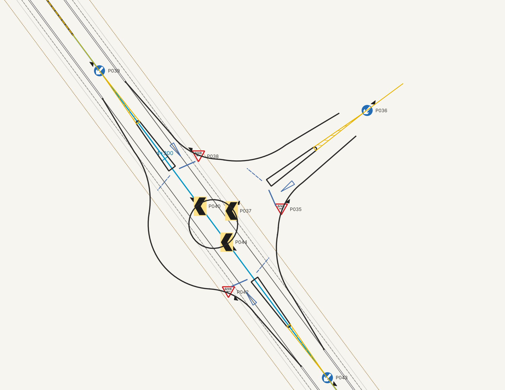
Choose the type Bus bay (RDM/1/3/3/01) and press Place on map. Click where the bay starts on the side of the road it serves, then where it ends: the clicks set the side and the stopping length (at least 5 m; 25 m takes more than one bus). RFD adds, in the direction of travel on that side (Kenya drives on the left):
Bays serving opposite directions closer than 60 m centre to centre are flagged in the furniture checks (note 4 of the drawing).
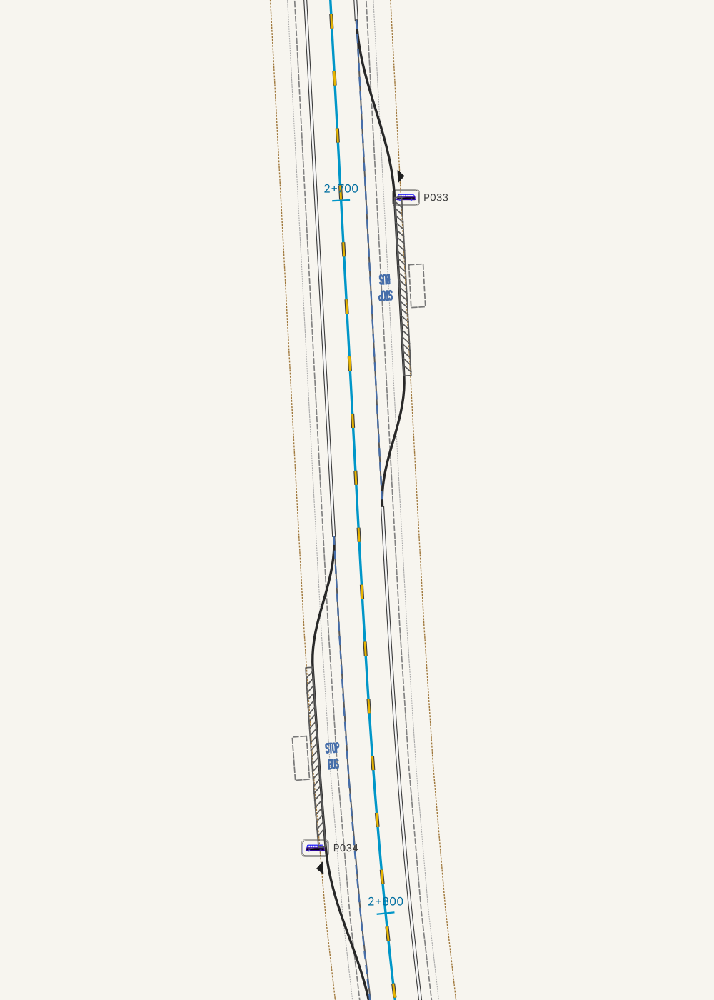
Choose the type Truck parking bay (RDM/1/3/3/03) and place it like a bus bay: click where the full-width bay starts on the side of the road it serves, then where it ends. The drawing shows a 70 m bay, which takes the four to five heavy vehicles RDM 1.3 §13.2.4.1 asks for; it varies with the design. RFD adds:
BAYEDGE; the drawing shows no kerb) and the white LM05 separation line, 0.2 m wide, 1 m marks and 1 m gaps, along the carriageway edge from the start point to the end point;The furniture checks flag a bay shorter than 70 m, and truck bays more than 30 km apart in one direction (RDM 1.3 §13.2.3.1). Bays should not be sited where visibility is restricted (§13.2); that is not checked yet, so look at the sight distance on the long section.
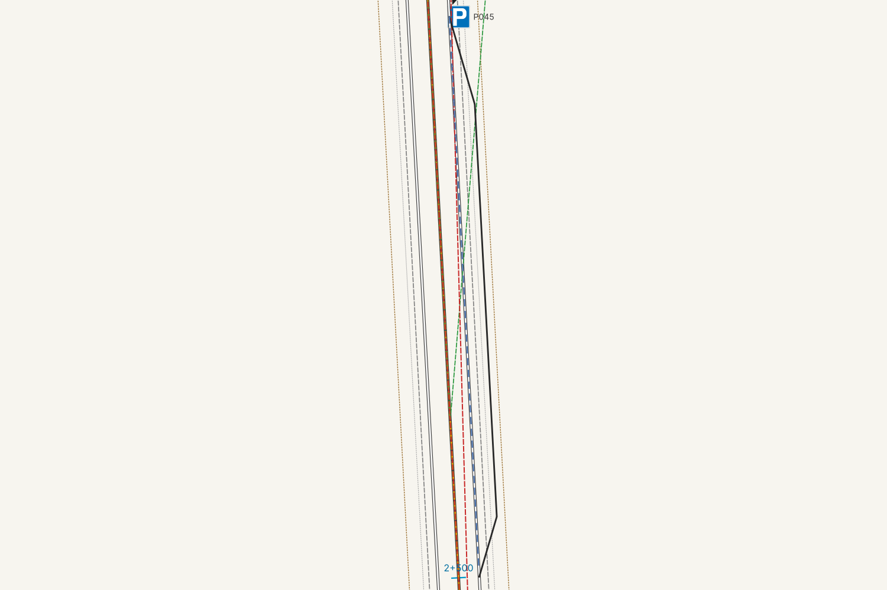
Choose the type Climbing lane (RDM 1.3 §6.6, RDM/1/3/3/02). Give the year-10 AADT if you have it and press Propose climbing lanes from the profile. For every up-grade of the design profile (between PVIs) longer than its RDM 1.3 Table 6.6 limit (900 m at 4 %, 800 m at 5 %, 700 m at 6 %, 600 m at 7 %, 500 m at 8 %), a lane is proposed:
With an AADT under 2,000 pcu none are proposed (§6.6.2); from 2,000 to 6,000 pcu the lane is listed as one to consider where passing is limited, and above 6,000 pcu as normally required. The steep descent of the demonstration road is 6.75 % over 600 m, just inside its 625 m limit, so nothing is proposed there. You can also place a lane by hand: click where the full-width lane starts on the climbing traffic's side, then where it ends, and the tapers are added. The proposal takes each grade as a straight line between PVIs: consecutive steep grades are not merged and vertical curves are not allowed for, so review the extent against the truck speed profile.
Bus bays, truck parking bays and climbing lanes widen the road, which belongs in the Civil 3D corridor. The report's Excel workbook has a sheet Widenings (table RFD_Widenings), one row per bay or lane, with what the Civil 3D widening needs: side, the chainages where the widening starts, reaches full width, leaves full width and ends, the entry and exit taper lengths, the width, the widened area and the kerb length.
Bays and lanes are stored by chainage, side and dimensions, not coordinates, so they survive a redesign. The round trip:
The planned edge is measured from the ETW before the widening: the line between the nearest corridor sections outside the bay. So a bay rebuilt on a widened corridor stays where it was instead of widening again. The bay only switches to that line where the corridor stands out by at least half the bay's depth, so ordinary curve widening is left alone. The check uses the corridor's sections, so it is as fine as the section spacing exported from Civil 3D.
The inventory for the QTO, the road furniture report and its checks, and the route into Civil 3D drawings.
Export inventory (Excel + CSV) writes *_Inventory.xlsx with named Excel Tables, ready to link into a QTO workbook, and a CSV of the sign faces:
| Table | One row per | Main columns |
|---|---|---|
| RSD_Signs | sign face | Post, chainage, side, offset, edge and clearance, facing, code, description, size, legend, grade, design speed, UUIDs |
| RSD_Posts | post | Post ref, chainage, side, post type, foundation, number of faces |
| RSD_Linear | linear run | Item, pattern, chainages, length, side, offset, quantity, painted area, terminals |
| RSD_Quantities | item | Faces by code and size, posts and foundations by type, markings in m and m², studs, barriers and terminals; live formulas over the other tables |
There are no rates: the tables feed the separate QTO and Bill process.
Road furniture report (PDF + PNG sheets + Excel) asks for the plan scale (Auto, 1:500 to 1:5000, or no plan sheets) and Prepared / Checked / Approved by, kept with the project. It writes an A3 landscape PDF, a PNG per plan, long-section and strip sheet, and an Excel workbook. Every page sits in the same frame with a title block; to add a logo at the top right, point the QGIS setting RoadFurnitureDesigner/report_logo at an image file. The demonstration road's report is 21 pages.
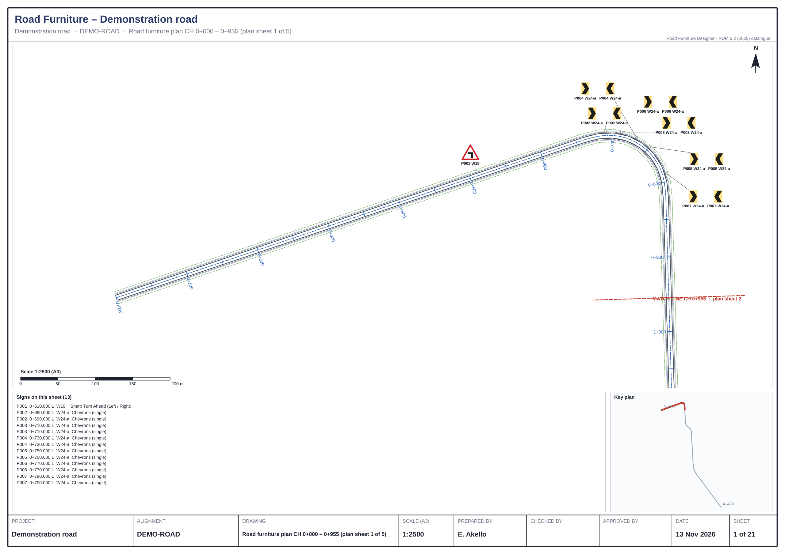
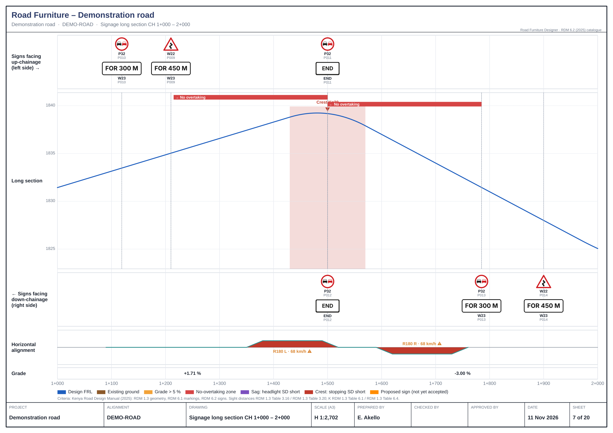
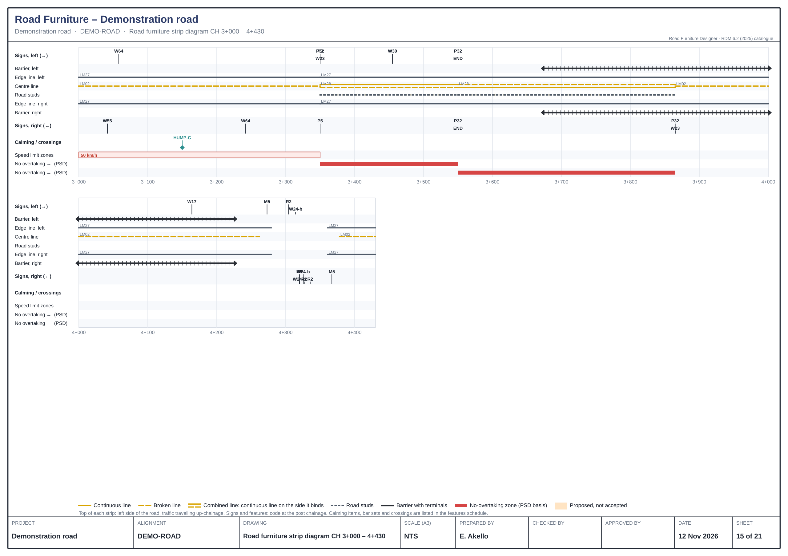
A straight-line diagram, 1 km per strip and three strips per page, of everything along the road against one chainage scale, so signs and markings can be checked by eye against the no-overtaking zones they follow. The combined line shows which side binds; proposed items have a light orange band.
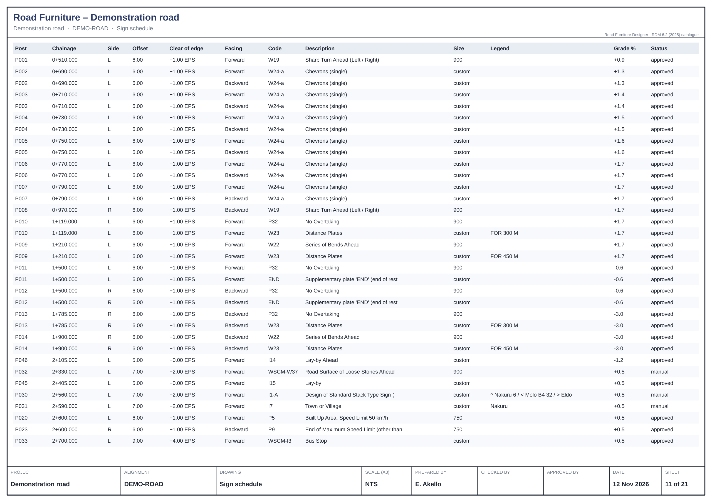
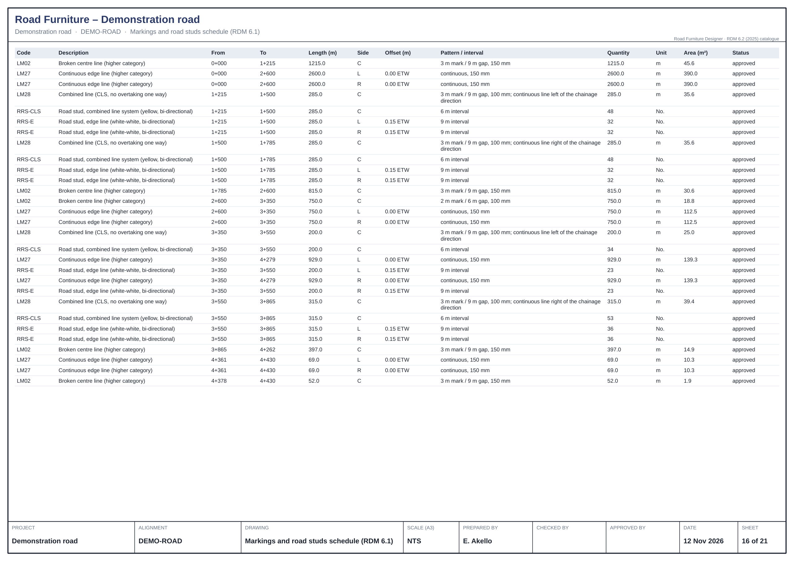
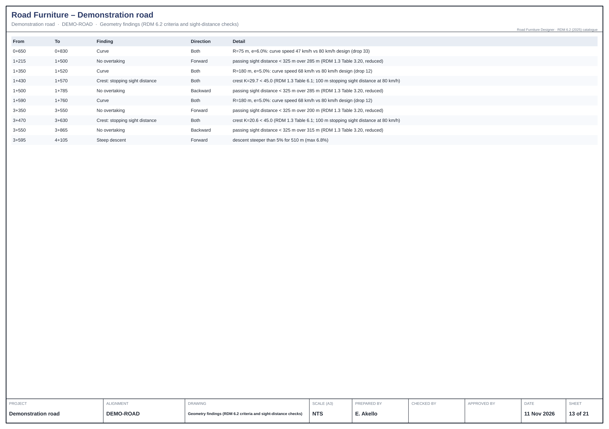
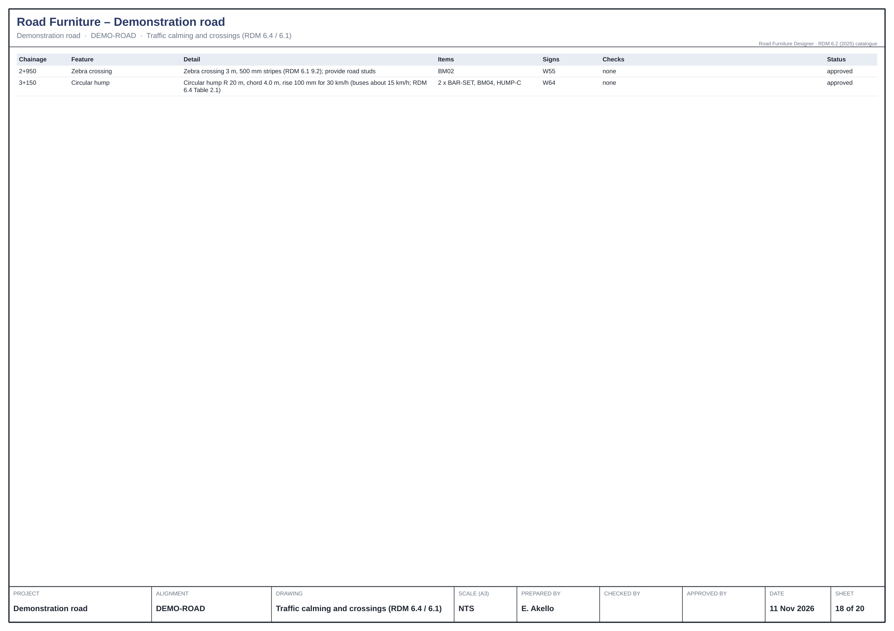
After the sign schedule and the geometry findings come the markings and studs schedule, the barrier schedule (with the basis of each run), traffic calming and crossings, the junction islands and markings (each junction with its kerb length, island area and painted length and area by marking code), the linear quantities and the furniture checks. The Excel workbook has the sheets Signs, Findings, Horizontal curves, Vertical curves, Markings, Barriers, Features, Junctions (one row per junction and item, ready for the bill of quantities), Widenings (bus bays, truck parking bays and climbing lanes, section 16), Furniture quantities, Furniture checks and Basis.
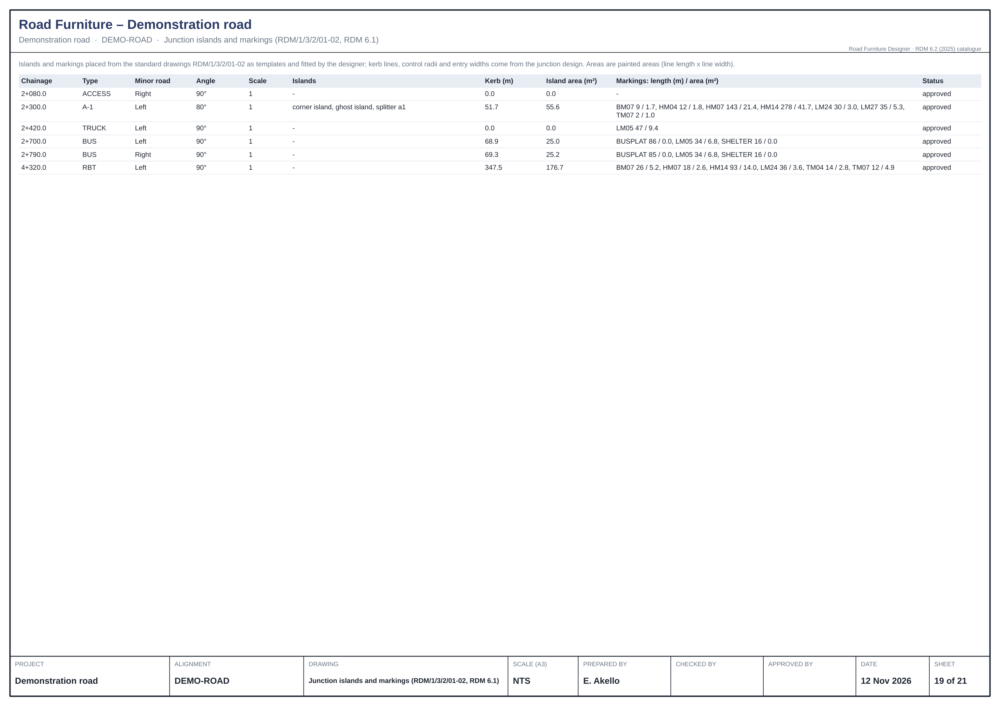
When the report is made, RFD works the following out again from the geometry with the project's settings and compares it with what is in the project. Each check is an Issue, a Check or Info, for the designer to resolve or accept.
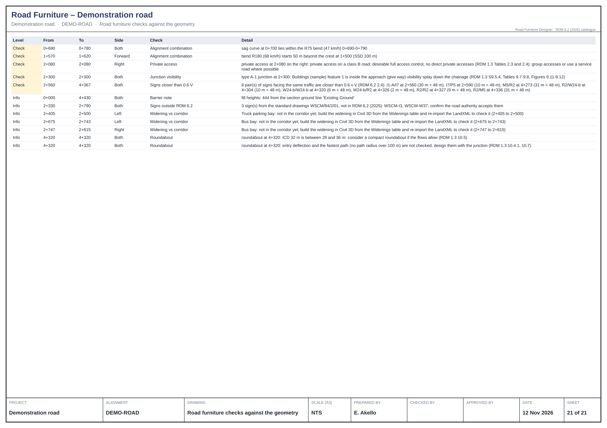
| Check | What is compared |
|---|---|
| Centre line | Every no-overtaking zone has a centre line that prohibits overtaking for that direction. The passing sight distance governs. |
| Barriers | Every span the fill warrant asks for, with its run-out, is covered. Barriers without a fill warrant are listed (fine for obstacles and structures RFD does not check); discretionary fills, clear-zone and verge notes. |
| Signs | Signs the geometry asks for are in the project; signs facing the same traffic are 0.6 V apart (chevron series and plates excepted); proposals not yet accepted. |
| Start and end of restrictions | Every sign that opens a restriction is closed further on for the same traffic, and plates go with their signs: P32 → P32 + END (with a W23 at the start); P5–P8 → P9 or the next limit; P14 → P14 + END; the supplementary WSCM-M14 (End of All Prohibitions) also ends speed limits, no-overtaking zones and clearways, and WSCM-M9 is ended by WSCM-M8 or M14; P17 → P18; P30 → P31; W27 → W28; IM12/IM13 → IM4/IM26; W21/W22 with a W23; road works RW40 → RW40 + RW41, RW38 → RW39, RW30–RW34 → RW35. Applies to signs placed by hand as well as RFD's own. The pairs are in rfd/data/sign_pairs.json; add rules in RFD_SIGN_PAIRS_PATH. |
| Alignment combinations | A sag inside a bend that limits the speed; a warned bend within the stopping sight distance beyond a crest. |
| Features and speed limits | Calming features and crossings visible from the SSD; a speed limit above the design speed. |
| Junctions | Each placed junction's crossing angle against RDM 1.3 §9.2.3: a check under 75° (preferably 75–120°, a smaller skew to be justified), an issue under the absolute minimum of 60°. Visibility splays: the profile and the obstruction layers (section 16). |
| Control at the road's end | Where our road starts or ends on another alignment of the LandXML, a junction (our road as the minor road, or a roundabout) or an R1 / R2 facing the traffic towards that end within 60 m; otherwise a check. |
| Roundabouts, accesses, bays and lanes | The roundabout sizes and arms (RDM 1.3 Chapter 10), private accesses (§9.11.16, Tables 2.3–2.4), bus and truck bay spacing and length, the entry of each bay seen from the stopping sight distance (§13.2), and the widenings against the re-imported corridor (section 16). |
| Signs outside RDM 6.2 | Info listing the supplementary WSCM signs used, for the road authority to accept. |
Export to Civil 3D (package + DXF) asks for the plan scale (default 1:2500) and writes the placement package (*_placement.json) and a DXF.
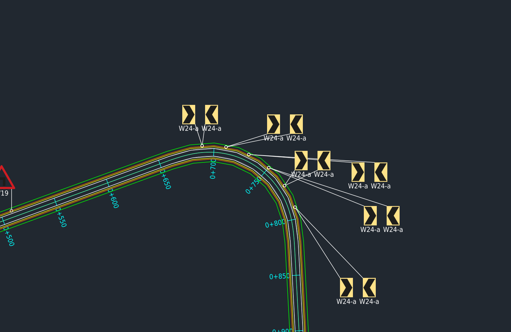
RSDC_<code>_<id> inserted at the post's true coordinates, holding a post marker, a leader, the face upright and the code. Directional signs and plates get their own block with the real legend.SIGN_CODE, LEGEND, DESCRIPTION, SIZE, CHAINAGE, OFFSET, SIDE, FACING, POST_REF, FACE_UUID and INSTALL_UUID, with the UUIDs repeated in XDATA (application RSD).RSD-MARK-*, RSD-STUD-* and RSD-BARRIER-* layers in world coordinates; broken lines use metre linetypes and markings are drawn at their painted width.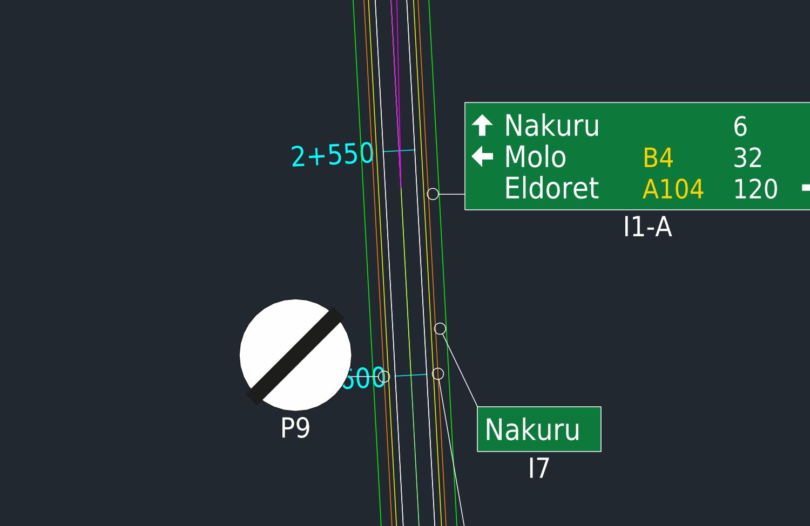
The DXF is in the LandXML's own world coordinates: easting and northing in metres, with no local origin, shift, scale or rotation. The header records metres as the unit and custom variables RSD_CRS, RSD_MAP_ZONE, RSD_SOURCE_LANDXML, RSD_ALIGNMENT and RSD_COORDINATES.
*_placement.dxf in Civil 3D.QSELECT → Layer = RSD-SIGN.COPYBASE with base point 0,0,0.PASTEORIG. Everything lands at its true coordinates.Alternatively, INSERT or XREF the whole DXF at 0,0,0, scale 1, rotation 0. The project drawing must be in metres, use the same coordinate system and be in the World UCS.
RSD-REF-NOTES holds a cross at the start of the alignment labelled with its easting and northing. Paste it once to confirm it falls on the Civil 3D alignment, then delete it.Dynamo scripts that place native blocks and read moves back are kept in dynamo/, but that route is parked; use the DXF.
How the data is stored, what is read from the LandXML, the geometry and design formulas, the catalogue, the plan-layout method, and how the outputs were verified.
| Table | Contents |
|---|---|
| rsd_signs | Point per sign face. User fields and derived fields (Appendix A). |
| rsd_lines | Linear runs: item, chainages, side, offset and edge, width and flip, status, rule and reason; geometry, length and quantities derived. |
| rsd_meta | Key/value: LandXML path (relative), alignment, project name, schema, CRS, criteria set, Prepared / Checked / Approved by. |
| rsd_alignment, rsd_chainage, rsd_edges, rsd_vcurves | Alignment, chainage ticks, corridor edges, vertical curves. |
Faces on one post share an install_uuid; each face has its own face_uuid; each run its line_uuid. The UUIDs follow an item through the inventory, the package, the DXF and any read-back. Everything a rule, a feature or a speed zone creates carries its rule (curve, marking, barrier, feature:<id>, speed:<id> …), so it can be listed, replaced or removed as a group. On-disk names keep the rsd_/RSD prefix of earlier versions so existing projects and drawings keep working.
| Element | Used for |
|---|---|
| CoordinateSystem | EPSG code and name: layer CRS, DXF header. |
| Alignment / CoordGeom | Line, Curve and clothoid Spiral elements; coordinates northing first, as Civil 3D writes them. |
| StaEquation | Displayed chainage versus internal station. |
| Feature SpeedStation, Roadway/DesignSpeed | Design speed by chainage. |
| Superelevation / FullSuperelev | e for curve speeds. |
| Profile / ProfAlign, ProfSurf | Design profile; existing ground on the long sections. |
| CrossSects | Coded points (ETW, EPS, Hinge, Ditch, Daylight) become road edges and barrier sections; the section ground line is the original ground for barriers. |
| Surfaces | Skipped when loading; read only to sample original ground under sections that lack a ground line. |
The file is streamed (iterparse) and corridor sections are read by a byte scan, so large exports load quickly: a 59 MB project export opens in about 0.6 s.
| Item | Method | Source |
|---|---|---|
| Curve safe speed | V² = 127 R (e + fmax(V)), solved by iteration | RDM 1.3 Table 5.1 |
| Advance distance | 6 s of travel at the design speed, rounded up to 10 m | RDM 6.2 §2.4 |
| Spacing; lateral position | 0.6 V metres; 0.6–3.0 m beyond the edge | RDM 6.2 §2.4 |
| Chevron spacing | By radius | RDM 6.2 Table 4.2 |
| Steep grades | Descent > 5 %, ascent > 10 % | RDM 6.2 §4.6.4 |
| Stopping and passing sight distance | Eye 1.05 m; object 0.20 m (SSD), 1.3 m (reduced PSD) | RDM 1.3 Tables 3.13, 3.16, 3.20 |
| Crest and sag K | Headlight sight distance in sags (0.6 m, 1° up-spread) | RDM 1.3 Tables 6.1, 6.4 |
| Marking dimensions; stud intervals | Mark, gap and width by speed class; 6 / 9 / 12 m | RDM 6.1 Tables 4.1–4.3, 13.2 |
| Barrier warrant, run-out, set-back, clear zone | Figure 12.4 curves (digitised); Table 12.6; §12.6.6; Table 12.1 | RDM 1.3 Chapter 12 |
| Humps, tables, bumps, bar markings | Tables 2.1–2.3, Figure 2.4, §2.4.2 | RDM 6.4 |
| Speed limit signs | Start, middle and end of the section; P9 at the end | RDM 6.2 §3.5 |
| Sign sizes | By design speed for Stop, Give Way, warning and circular regulatory signs | RDM 6.2 Tables 3.1, 3.3, 4.1 |
rfd/data/criteria): kenya_rdm_2025 (default) and aashto_2011. Other manuals or project values can be added as files with an extends parent, through RFD_CRITERIA_PATH or the Auto tab's Add…; see docs/criteria/README.md. The report's Basis sheet cites the tables used.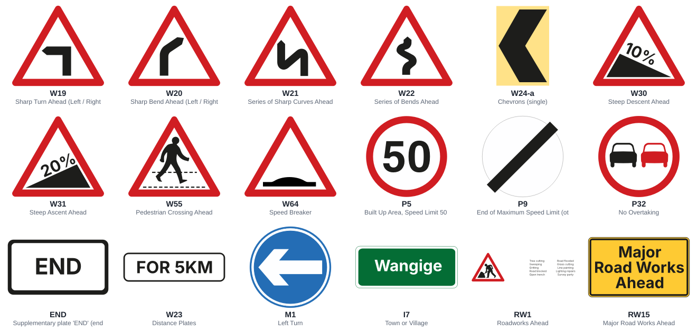
tools/extract_rdm_signs.py reads RDM 6.2 (2025), matches each figure caption to its framed artwork, keeps the sign and drops dimension lines, and writes an SVG icon and a CAD block per sign (RSD_<code>). tools/build_catalogue.py adds sizes, legend types and size rules._M); W24 chevrons are split into W24-a to W24-d.END; its artwork is the identical plate of Figure 10.43 (RW41).Nineteen signs on the standard drawings WSCM/84/2/01 (Jan 2024) have no RDM 6.2 equivalent. They are in the catalogue group Supplementary (WSCM), always with a WSCM- prefix so they can never be read as an RDM code: WSCM W22 is River Bed Crossing, while RDM W22 is a series of bends. tools/extract_wscm_signs.py extracts their artwork from the two sheets. The River Bed Crossing sign is given the red border of the other warning signs (the sheet hatches its border black, a drafting slip). rfd/data/wscm_crossref.json maps all 75 WSCM codes to RDM 6.2 (same, similar or none). Every schedule shows the WSCM code, and the furniture checks list the WSCM signs used.
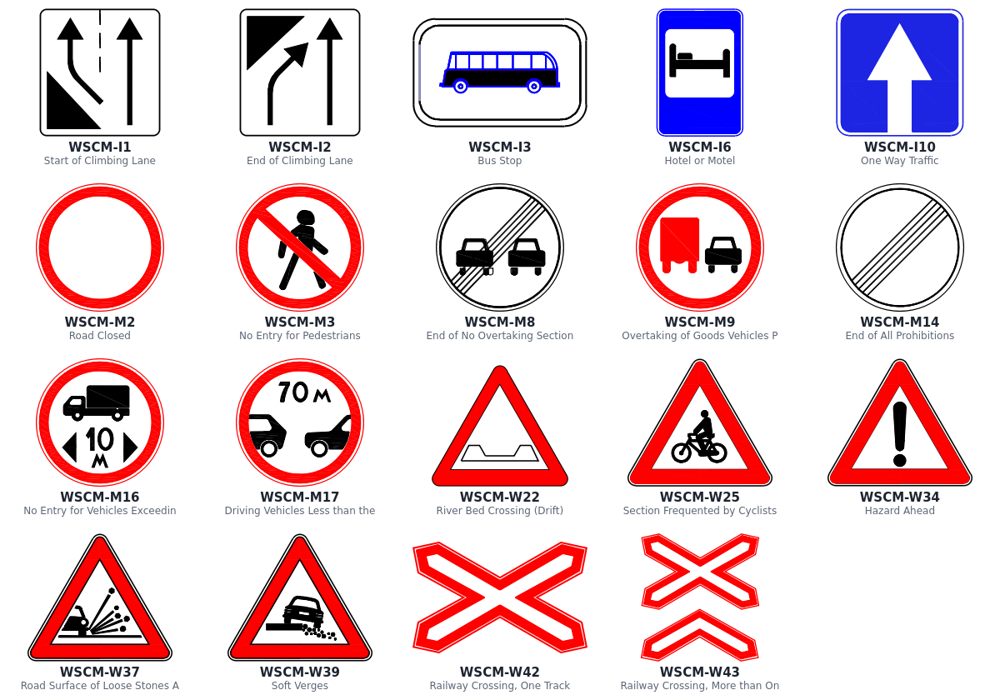
At drawing scale a sign symbol is far bigger than its post (25 m at 1:2500), so drawings show it beside the road with a leader. The same method places symbols in the DXF and on the plan sheets:
Plan sheets are cut so the road fits: the window is shortened by 10 % at a time until the road, turned to run along the sheet, fits the viewport with room for symbols either side.
| Check | Data | Result |
|---|---|---|
| Automated tests | Synthetic roads | 301 core tests, including 60 random roads through signs and markings, 40 with random embankments, 30 with random calming features, 30 with random speed zones and 30 through the report checks, junction templates square and skewed on both sides, and the packaged plugin ZIP; 43 headless QGIS tests, including the dock fitting a 380 px panel. |
| Whole workflow | Nine alignments from private Civil 3D exports (names withheld) | Signs, markings, barriers, features, speed zones, report (up to 97 pages for a 36 km road in about 2 s), inventory and DXF, with no failures; RFD's own proposals pass its furniture checks. |
| Alignment geometry | Private exports with up to 26 spirals | Element ends reproduce the LandXML coordinates. |
| DXF georeferencing | Private export; automated test | The reference alignment starts exactly at the LandXML's first point; every sign back-computes to its chainage and offset with no measurable difference; sign blocks are inserted at their posts. |
| Paste into a project drawing | Civil 3D project drawing | COPYBASE 0,0 and PASTEORIG: signs and plates landed on the alignment at their chainages. |
| Barrier heights | Private export with section ground lines and a TIN | Heights from the section ground lines and from the TIN agree to the millimetre. |
| Symptom | Cause and fix |
|---|---|
| Export says to fix errors first | A check is at error level (for example a post inside the travelled way). Fix it on the Inventory tab's list. |
| No road edges, no edge lines or no barriers proposed | The LandXML has no coded corridor sections. Export them from Civil 3D, or give a carriageway width on the Linear tab for edge lines. |
| Barrier heights look too small or too large | Check which ground was used (the reason says): without a section ground line or TIN the daylight point is used. Choose the ground surface on the Linear tab. |
| Signs pasted in the wrong place | The project drawing is in another coordinate system, in millimetres, or in a user UCS. Check the check point against the alignment. |
| Every sign sized for 80 km/h, or no curve warnings where expected | No design speeds or superelevation in the LandXML. Define them in Civil 3D and export again. |
| No grade, no-overtaking or centre-line proposals | The design profile is not attached to the alignment in the export. |
| "Restriction not ended" in the checks | A sign such as P32 or a speed limit is not closed before the alignment end. Fine if it continues beyond the project; otherwise add the end sign. |
| Export libraries missing | The plugin's ext_libs folder is missing. Reinstall from the ZIP. |
ModuleNotFoundError: No module named 'Road-Furniture-Designer-main/…' on install | The ZIP is the source repository (GitHub's Code → Download ZIP). Install the plugin ZIP from a release's Assets or the Actions artifact (section 3). |
| Visibility splays drawn for 80 km/h | The main road's alignment has no design speeds (or it is a clicked direction). Type its speed as Main road speed on the Junctions + bays tab and place the junction again. |
| No obstructions found, though there are buildings | Only the ticked layers are checked, and only features inside the splays count. Make sure the layer is ticked and in a coordinate system QGIS can transform. |
| "Not in the corridor yet" although the bay is built in Civil 3D | The widening is not on the ETW code (it moved another code, such as the shoulder), or the corridor has no section inside the bay. Model the widening on the ETW and sample sections through the bay, then export again. |
| Access returns start at the ETW, not the shoulder | The corridor has no shoulder edge code (EPS, EOS, ESH or Shoulder). Export the corridor with it, or accept the ETW. |
| No climbing lane proposed on a long climb | The grade between PVIs is within its Table 6.6 length, the AADT given is under 2,000 pcu, or the profile is not in the export. Place the lane by hand if you need one. |
| "Main road alignment … is not in the LandXML" | A minor-road junction refers to an alignment that is no longer in the export. Re-export it with our road, or remove the junction and place it again with a clicked direction. |
| The dock is gone | Press the toolbar button: it shows the dock and brings it to the front if it is tabbed behind another panel. A floating dock that went off screen comes back docked. |
| Field | Kind | Meaning |
|---|---|---|
| face_uuid, install_uuid | identity | Face and post identities, kept across all exchanges. |
| post_ref | user | Post number (P001…). |
| sign_code, size, size_auto, mirror | user | RDM code, size (mm or custom), Auto size, mirrored version. |
| facing, facing_auto, skew | user | Forward / Backward, Auto facing, skew in degrees. |
| legend, road_class | user | Legend text and colour scheme. |
| post_type, foundation, remarks | user | For the QTO. |
| status, rule, reason | engine | proposed, approved (accepted proposal) or empty for hand-placed; the rule and the reason. |
| chainage, chainage_m, station_int | derived | Displayed chainage (text and metres) and internal station. |
| offset_m, side, face_az | derived | Offset from the centreline, L/R, face azimuth. |
| edge_ref, edge_clear | derived | Reference edge and clearance beyond it. |
| grade_pct, speed_kmh | derived | Design grade and speed at the sign. |
| description, face_svg, stack | derived | Sign name, generated face file, position in the post's stack. |
| Field | Kind | Meaning |
|---|---|---|
| line_uuid | identity | Run identity, kept across exchanges. |
| item_code, sta_from, sta_to, side, offset_m, edge_ref | user | Item, internal chainages, L / C / R, offset and the edge it is measured from. |
| width_m, flip, no_overtaking | user | Width across the road (transverse items); combined line binding the other direction; stud interval. |
| status, rule, reason, remarks | engine / user | As for signs. |
| description, category, colour, pattern, unit | derived | From the catalogue; pattern at the design speed of the run. |
| ch_from, ch_to, length_m, quantity, speed_kmh | derived | Displayed chainages, length, quantity (m, number or m²) and design speed. |
| Field | Kind | Meaning |
|---|---|---|
| piece_uuid, junction_id | identity | The piece (its features share it) and the junction it belongs to. |
| kit, piece, corner, code, params | template | Junction type, template piece, corner (left_turn / other), marking code (KERB, GUIDE, HM07 …) and the kit's settings for the piece. |
| sta, bearing_deg, scale, edge_m | user | Junction point (internal chainage), minor road direction, scale, main-road edge offset (blank: ETW or 3.5 m). Editing one rebuilds the piece. |
| role, main_ref, our_sta | placement | main, minor (our road joins another) or bay; the main road (alg:<name> or a clicked line); our road's chainage at the junction. |
| status, rule, remarks | engine / user | Rule junction:<id>. |
| kind, description, ch, side, crossing_deg | derived | Island, marking or guide; displayed chainage; minor road side; crossing angle. |
| kerb_m, island_m2, line_m, paint_m2 | derived | Kerb length and island area (on the kerb feature); painted line length and area (length × line width). |
| rbt | derived | Roundabouts: island, arms, quantities, the arms' details for the signs, and the checks (JSON). |
| access | derived | Private accesses: width, radius, distance to the boundary, road class, quantities and checks (JSON). |
| sight | derived | Visibility splays: main road speed used (and whether assumed), set-backs, lengths and the profile sight distance for each splay (JSON). |
| widen_m2, bay | derived | Bus bays, truck parking bays and climbing lanes: widened area, and the bay's stations, side, tapers and width (JSON) for the Widenings table. |
| Layer | Plots | Contents |
|---|---|---|
| RSD-SIGN, RSD-SIGN-TEXT, RSD-SIGN-LEADER | yes | Sign blocks, attribute text, post markers and leaders. |
| RSD-MARK-*, RSD-STUD-*, RSD-BARRIER-* | yes | Markings, road studs and barriers by item code. |
| RSD-JN-KERB, RSD-JN-<code> | yes | Junction island and bus bay kerbs (truck bay pavement edge on RSD-JN-BAYEDGE; private accesses on RSD-JN-ACCESS, -ACCESS-P and -PIPE); junction, bay and lane markings and hatching by RDM 6.1 code (bus platform BUSPLAT, shelter SHELTER). |
| RSD-JN-SPLAY-A, RSD-JN-SPLAY-S | yes | Visibility splays, approach and stop. |
| RSD-JN-GUIDE | no | Junction construction lines (freeze for the final drawing). |
| RSD-ALIGN, RSD-ALIGN-OTHER | no | Alignment with chainages; other alignments, named. |
| RSD-EDGE-<code>, RSD-REF-NOTES | no | Corridor edges by code; coordinate check point. |